Do opisania innych wielkości fizycznych często nie wystarcza podanie jedynie jej wartości. Te wartości będziemy nazywać wektorowymi, gdyż wektory posiadają takie cechy jak:
- wartość liczbowa
- kierunek
- zwrot
- punkt przyłożenia
| 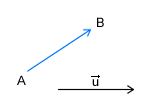 |
A - początek wektora 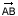
B - koniec wektora |
W wyjaśnieniu co poszczególne cechy przedstawiają posłużę się przykładem z samochodem i wektorem prędkości. Możemy powiedzieć że samochód jedzie z prędkością np. 100 km/h. Ta liczba będzie nas informować o wartości liczbowej wektora prędkości. Ale ta informacja nie mówi nam wszystkiego o ruchu tego samochodu. Nadal nie wiemy gdzie ten samochód jedzie, czyli w jakim kierunku. Opisuje to druga cecha czyli kierunek. Kierunek jest to prosta na której leży wektor. Czyli jeżeli powiemy, że samochód porusza się w kierunku północ-południe, to nadal nie wiemy wszystkiego. Nie wiemy czy porusza się na północ, czy na południe. Tę cechę nazywać będziemy zwrotem wektora. Czyli mówiąc o poruszającym się samochodzie możemy powiedzieć że jedzie on w kierunku N-S, a zmierza na północ z prędkością równą 100km/g. Ale gdy nasz samochód pojedzie na północ tak daleko, że może trafić na oblodzoną drogę, a na tej drodze może wpaść w poślizg. Nasze auto zarzuci i "przekręci" się o 180 stopni. Podczas tego przekręcania się samochodu, będziemy mogli stwierdzić, że przód auta porusza się wolniej niż tył. Istotną informacją będzie wówczas która część samochodu porusza się z daną prędkością. Dlatego ostatnią cechą wektorów jest ich punkt przyłożenia. Który mówi nam dokładnie który punkt samochodu porusza się z daną prędkością, bo inny punkt może poruszać się już z inną, choć mamy do czynienia z tym samym samochodem.
Wektorem nazywamy odcinek prostej, ustalony przez uporządkowaną parę punktów, z których pierwszy jest początkiem wektora, a drugi jest jego końcem. Odległość między początkiem a końcem wektora nazywamy długością wektora.
Wektory w układzie współrzędnych
Jeżeli mamy dany dwa punkty 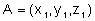 i 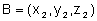 to zbiór trzech uporządkowanych liczb 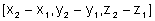 nazywamy współrzędnymi wektora o początku w punkcie A i końcu w punkcie B.
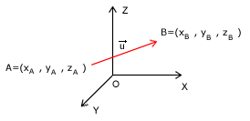
Jeżeli mamy dwa wektory to możemy określić ich wzajemne położenie. Mogą one być wzajemnie:
| - równoległe - | jeżeli proste zawierające kierunki obu wektorów są równoległe do siebie | 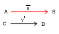 |
| - prostopadłe - | jeżeli proste zawierające kierunki obu wektorów są prostopadłe do siebie | 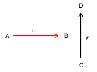 |
| - równe - | jeżeli wszystkie swoje cechy (długość, kierunek, zwrot) mają takie same | 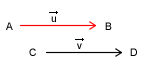 |
| - przeciwne - | jeżeli mają ten sam kierunek, taką samą długość lecz przeciwne zwroty | 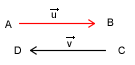 |
Poza tym możemy mówić o wektorach
- zerowych - punkt początkowy wektora pokrywa się z punktem końcowym wektora, jego współrzędne to [0,0,0]
- jednostkowych (zwanych także wersorami) których współrzędne są równe [1,0,0], [0,1,0] lub [0,0,1]
Używając wektorów musimy znać podstawowe działania na wektorach. Są nimi:
- dodawanie wektorów
- odejmowanie wektorów
- rozkładanie wektora na składowe
- iloczyn wektora przez liczbę
- iloczyn skalarny wektorów
Składanie wektorów
Składaniem wektorów nazywamy dodawanie i odejmowanie wektorów. Przedstawię dwa proste sposoby na składanie wektorów.
Pierwsza metoda jest taka, że do końca pierwszego wektora, przykładamy drugi wektor (w obu przypadkach nie możemy zmienić kierunku, długości ani zwrotu wektorów). Sumą wektorów będzie inny wektor, którego początkiem i końcem będą punkty początku pierwszego wektora i punkt końca drugiego (ostatniego) wektora. Tą metodą możemy składać kilka wektorów. Niezależnie jakie jest ich wzajemne położenie.
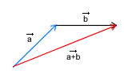
Odejmowanie wektorów jest bardzo podobne. Jeżeli mamy wykonujemy działanie 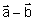 to działamy tak samo jak poprzednio, tylko z tą różnicą, że zamiast dodawać wektor
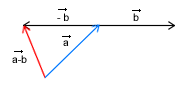
Drugim sposobem składania wektorów jest tzw. sposób równoległoboku. Stosujemy go jeżeli składamy dwa nierównoległe wektory. Wówczas rysujemy dwa wektory (pamiętamy o długości kierunku i zwrocie każdego z nich) zaczepione w tym samym punkcie. Następnie możemy te dwa wektory potraktować jak dwa boki równoległoboku o wspólnym wierzchołku. Pozostaje nam wówczas dorysować dwa pozostałe boki. Sumą wektorów będzie wektor pokrywający się z przekątną równoległoboku o początku wspólnym z pozostałymi wektorami.
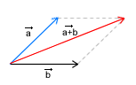
Rozkładanie wektorów na składowe
Jest to czynność odwrotna do omawianej poprzednio. Zdarza się, że chcemy jakiś wektor rozłożyć na inne, które ułatwią nam obliczenia. Bardzo często wektory rozkłada się na dwa składowe, jeden o kierunku poziomym, a drugi o kierunku pionowym. Rozkładając wektory będziemy postępować podobnie jak przy składaniu wektorów metodą równoległoboku, z tym że będziemy wykonywać czynności niejako od końca. Dany wektor możemy traktować jak przekątną równoległoboku. Następnie rysujemy dwie proste przechodzące przez punkt początkowy danego wektora. Te proste powinny wyznaczać kierunki wektorów składowych. Następnie rysujemy znowu dwie proste przecinające się w punkcie końca wektora, tak by powstały cztery proste parami równoległe. Wektory składowe zawierają się w dwóch bokach równoległoboku o wierzchołku w punkcie początku wektora początkowego.
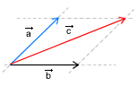
Iloczyn wektora przez liczbę
Jeżeli mamy dany wektor 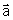 i narysujemy wektor, który jest sumą trzech takich wektorów ( 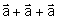 ) to jak łatwo się domyśleć powstanie wektor trzy razy dłuższy od wektora . Taki wektor możemy zapisać w postaci 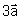 . Jeżeli mamy dany taki wektor 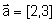 , to 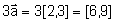 .
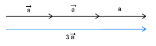
Iloczyn skalarny wektorów
Iloczynem skalarnym dwóch wektorów jest liczba równa iloczynowi długości tych wektorów i cosinusa kąta zawartego między nimi: 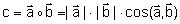 . Należy pamiętać, że iloczyn skalarny jest liczbą (skalarem), a nie wektorem.
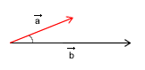
Iloczyn wektorowy
Iloczynem wektorowym dwóch wektorów (
- który jest prostopadły do płaszczyzny rozpiętej na wektorach
 i
i
- punkt przyłożenia wektora
pokrywa się z początkami wektorów
i

-
którego długość jest równa polu równoległoboku rozpiętego na tych wektorach
 i
:
i
:
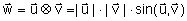 - którego zwrot jest określony regułą śruby prawoskrętnej. Oznacza to, że 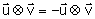
Jeżeli śrubę prawoskrętną ustawioną równolegle do kierunku wektora
Mówiąc inaczej jeżeli mamy narysowane na kartce (leżącej na biurku) te dwa wektory:
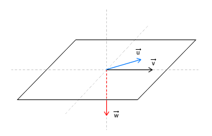